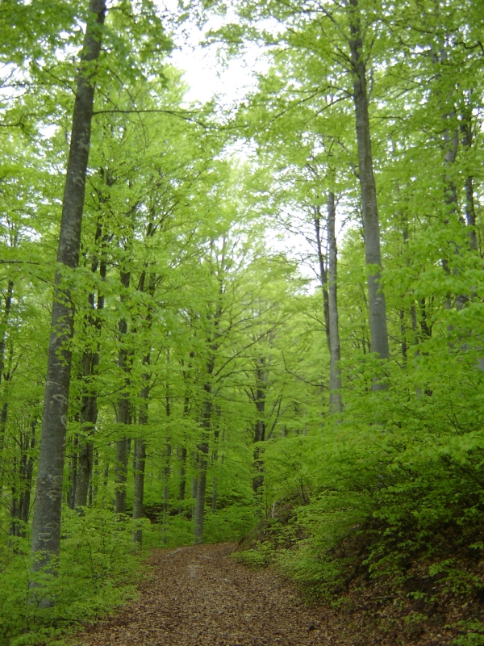

Il Lago Nero e L ’Alta Valle del Sestaione
Ci presentiamo: siamo la 2°A della Scuola Media Anna Frank.
Abbiamo scelto di costruire uno strumento agile e di facile consultazione che possa essere utile ai turisti interessati a visitare questo magnifico angolo della provincia di Pistoia, ricco di storia, di paesaggi affascinanti, di specie vegetali e animali molto particolari e rare. Si tratta di una delle aree più pregiate dell’Appennino settentrionale che custodisce al suo interno popolamenti vegetali annoverati fra quelli di interesse conservazionistico dalla Direttiva Habitat del 1992.
Tutto è cominciato con l’incontro con il Dott. Simone Vergari, il quale ci ha introdotto a quella che sarebbe poi risultata un’esperienza unica, la passeggiata fino al Lago Nero. Quello che ci ha detto ci ha incuriosito e motivato quanto bastava perché, arrivati all’Orto Botanico dell’Abetone, non vedessimo l’ora di partire. E le aspettative sono state ampiamente superate da ciò che abbiamo visto, provato e imparato. Tutto il materiale raccolto, soprattutto fotografico, ci è servito, assieme a pubblicazioni particolari, ad allestire poi questo prodotto, su cui abbiamo lavorato a lungo.
L’area che abbiamo attraversato rientra nel perimetro del SIC (Sito di Importanza Comunitaria, Rete Natura 2000) IT5130001 Alta Valle del Sestaione. Molto vicino al sentiero che abbiamo percorso c’è la Riserva Statale di Campolino.
Una precisazione sui colori: useremo per i titoli il colore rosso per indicare i paragrafi di interesse storico – letterario, in azzurro quelli di interesse geografico – geomorfologico e in verde quelli di interesse ecologico – biologico.
Ecco i principali punti del nostro percorso: